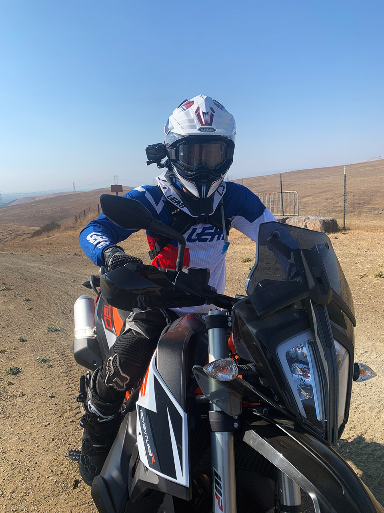

790 Adventur R Offroad
두달 전에 790 어드벤처 R을 구입했다고 글을 썼습니다. 그 사이에 아무 글도 없이 이 글이 그 다음 글이네요. 그동안 그렇게 바쁘지도 않았는 데, 글은 잘 안써지게 되네요. 사실 집에서 재택근무를 시작 한 후에 일기를 쓰는 횟수도 많이 줄었습니다. 그냥 매일 반복되는 생활이라 딱히 쓸 내용도 없고, 지난 날을 되돌아 보는 것도 한두번이고, 그냥 그래요.
아무튼, 바이크 구입 후 두달 동안, 다른 곳은 거의 다니질 못했습니다. 무더운 여름이기도 하고, 오랫만에 다시 바이크를 타는 거라 장거리는 생각도 안했었구요. 엎친데 덥친격으로 코로나 바이러스 유행에 더불어 캘리포니아에 엄청난 산불이 발생해서, 뿌옇게 변해버린, 심지어는 오랜지 빛이 나는 하늘과, 매케한 공기질 덕분에 근처에도 잘 다니질 못했습니다.
그래서 근처 오프로드 파크에는 겨우 세번 가봤네요. 그 중 처음은 거의 초보자 공터에서만 연습했으니 실제로 탄 건 두번이라 해야 할 것 같습니다. 두번, 그것도 오프로드 파크의 수 많은 코스 중 한 코스만 이틀 타본 거라 그닥 할 말이 없긴 하지만, 그동안 느낀 점을 좀 이야기 해 볼까 합니다.

790 Adventure R
일단, 바이크에 대해서 먼저 이야기 해 볼까요. 제가 바이크를 잘 몰라서 좋다 나쁘다 이야기 하긴 뭣 합니다. 그냥 이전에 타던 본네빌과 비교해 보는 수 밖에 없겠네요. 본네빌은 시트고가 780mm 였던 걸로 기억하는데 덕분에 편안히 양 발이 땅에 잘 닿습니다. 반면에 KTM 790 R은 거친 오프로드를 넘기 위해서 Ground clearance도 높고, 시트고도 880mm로 매우 높죠. 거기에 더 악영향을 미치는 게 제 몸무게 입니다. 본네빌은 도심형 바이크라 서스펜션이 조절할 수 있는게 하나도 없고 서스펜션 길이도 짧은 반면, 790R은 서스펜션이 240mm 나 움직일 수 있어서 앉았을 때 적당한 표준 몸무게 사람은 서스펜션이 꽤 내려갑니다. 전 몸무게가 얼마 되지 않아서 아무리 서스펜션을 조절해도 거의 안 내려갑니다. 그래서 다른 사람들보다 더 높게 느껴지더군요.
앉았을 때 적당히 내려가 줘야 오프로드 탈 때 바퀴가 땅에서 잘 안떨어집니다. 이게 무슨 의미냐면, 오프로드 탈 때 약간 파인 곳이 있다면, 달리던 바이크는 앞으로 그대로 가려고 하는 데 바닥이 비어 있으니 서스펜션이 늘어나서 바퀴가 여전히 바닥에 닿아야 하는 데, 처음에 서스펜션이 덜 내려가 있다면 바퀴가 늘어 날 공간이 거의 없으니 바퀴가 붕 뜨게 되는 거죠. 이게 접지력 유지에도 문제가 생기고, 바퀴가 잘 미끄러지는 결과를 가져온다고 하더군요.
실제로 제가 오프로드에서 달리는 모습을 뒤에서 찍은 영상(아래 6분 34초부터)을 보면, 바퀴가 계속 좌 우로 살짝씩 슬립이 납니다. 제가 일부러 슬립낼 만큼 실력이 좋을리는 없으니, 아무래도 덜컹거리면서 접지가 좀 약해진다고 봐야죠. 이 부분은 rebound 설정을 좀 더 만져봐서 해결 될 지 확인은 해 봐야 겠습니다.
뭐 이건 제 문제고 바이크 문제는 아닙니다. 뒤에 좀 무거운 거 하나 싣고 다니면 어느정도 잡을 수 있는 문제이기도 하고요. 사실 그것 말고는 본네빌에 비해서 나쁠게 하나 없는 바이크입니다. 마일리지도 길고요 (5.2 갤런 연료통으로 250마일가까이 갑니다) 각종 안전장치도 다 있습니다. TCS, ABS, Lean angle TCS, ABS도 있고, 라이딩 모드가 Rain, Offroad등이 있어서 빗길에도 쓰로틀 부드럽게 잘 잡아줍니다. 게다가 LCD에 스마트폰 네비게이션도 연동해서 예전처럼 지도를 외워서 다닐 필요도 없습니다.
덩치는 790R이 훨씬 큰데 무게는 본네빌보다 가볍습니다. 약 30파운드 정도 가벼운 걸로 나오네요. 연료도 1갤런 더 들어가는 데 30파운드 가벼우니 실제론 35~40파운드 가까이 가볍다고 봐야 합니다. 마력은 50% 더 좋고 무게는 가벼우니 연비도 잘 나오죠.
Metcalf
그래서 바이크가 절대로 성능이 부족하거나 어디가 흠이 있거나 그런 건 아닙니다. 그런 좋은 바이크를 가지고 도로만 타기에는 아까워서 위에서 언급했다시피 근처의 오프로드 파크에 가서 연습하고 있습니다. 가장 가까운 곳이 Metcalf OHV 라는 카운티 공원인데, 여긴 좀 크기가 작긴 하지만 집에서 15분 만에 갈 수 있는 곳이라 지금까지는 이곳으로만 갔습니다.
크게 3개의 코스가 있고 그 사이 사이에 좀 갈라지는 길도 있지만, 왠만하면 갈라지는 길은 죄다 상급자 아니면 최상급자 코스입니다. 여기서 상급자, 최상급자 기준이 제가 타고 있는 어드벤쳐 바이크 기준이 아니라, 완전 오프로드용 이거나 Dual Sport 바이크 기준이라, 실제로 어드벤쳐 바이크로 그 상급자 코스 타려면 오프로드 바이크로는 날고 기는 사람은 되어야 탈 수 있을 겁니다.
큰 세개의 코스 중에 1번, 2번 코스가 초중급자 코스입니다. 파크가 작아서 그런지 완전 초급자 코스는 없더라구요. 위에 영상에서 보면 경사가 별로 없어보이지만, 실제로 타보면 처음 타는 사람들은 꽤 겁을 먹을 만큼 급경사가 초반에 한 곳 있습니다. 그래서 처음 타는 사람은 여기 Metcalf보다는 남쪽으로 한시간 떨어진 Hollister SVRA 파크를 추천하더군요. 기회가 되면 그곳에도 가서 연습해 볼 생각입니다.
그 3 코스중 아직까지는 1번 코스만 탔습니다. 1번 탈 수 있으면 2번은 탈 수 있을거라곤 하는 데, 아직은 덩치 큰 어드벤쳐 바이크가 조금은 부담스러워서 1번을 잘 탈 수 있을 때 2번 코스에 도전해 보려고 합니다.
세팅을 조금씩 바꿔가며 타 보니, 초보자인 저에게 랠리 모드에 슬립 7 정도, 그리고 스로틀 반응은 오프로드로 하고 타는 게 맞더군요. 스로틀 반응이 기본이 랠리모드로 되어 있는데, 랠리모드는 정말 바이크가 괴물로 변하는 것 같습니다. 조금만 당겨도 팍팍 튀어나가서 오히려 전 제어가 어렵더군요. 오프로드 스로틀은 기본 로드 스로틀보다 오히려 덜 예민해서, 자잘한 초보자 실수 (갑자기 몸이 뒤로 젖혀지면서 스로틀을 감아버리는) 정도는 수정할 수 있는 여유는 주는 것 같습니다. 다만 가끔씩, 저도 모르게 스로틀이 다시 랠리모드로 가는 경우가 종종 있어서 깜짝 놀랄 때가 있습니다. 어떤 상황에 변하는 지 좀 확인해봐야겠더라구요.
사실, 어드벤쳐 바이크로 오프로드 타는 게 흔한 일은 아닌 것 같습니다. 지금까지 세번을 가면서 단 한번도 어드벤쳐 바이크로 Metcalf 파크를 라이딩 하는 사람은 본 적이 없구요. 대부분의 어드벤쳐 바이크는 장거리 특화라 도로에서 더 많이 보이는 것 같네요. 790R은 좀 더 오프로드에 치중되어 있어서 이렇게나마 오프로드 파크에서 즐길 수 있는 것 같습니다.
덩치가 크다보니, 게다가 제가 초보자이기까지 하다보니, 초보자 코스만 타도 정말 재밌습니다. 그렇게 빨리 달리지도 않고 15~25마일 근처로 달리는 데도 스릴 있습니다. 산 위로 올라가서 보는 풍경도 정말 좋구요. 이래서 산뽕이라 부르는건가 싶기도 합니다.
제가 만일 오프로드 파크만 탄다면, 790R 말고 더 가벼운 250cc짜리 dual sport 바이크를 탔을 것 같은데, 오프로드 파크는 험한 길을 가기 위한 연습정도라 최대한 어드벤쳐 바이크로 잘 탈 수 있게 연습해보려고 합니다. 이게 익숙해지면, 그동안 꿈꿔왔던 Backcountry Discovery Route나 Continental Divide Trail, Trans-America Trail 같은 것도 도전해 보려구요.
다음에 재밌는 영상과 글로 다시 업데이트 하겠습니다. 그땐 Hollister 정상 사진이나, 아무리 못해도 2번 코스 정상 사진으로 ㅎㅎㅎ